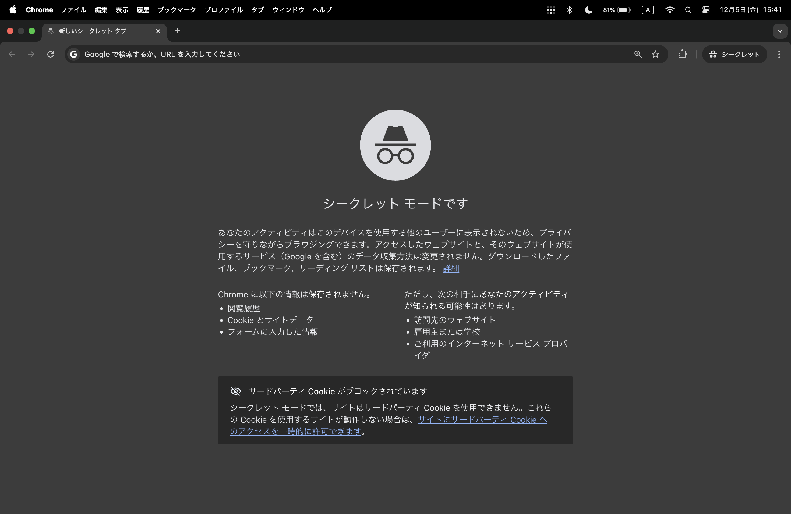
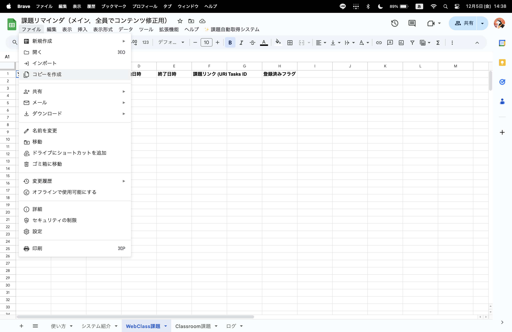
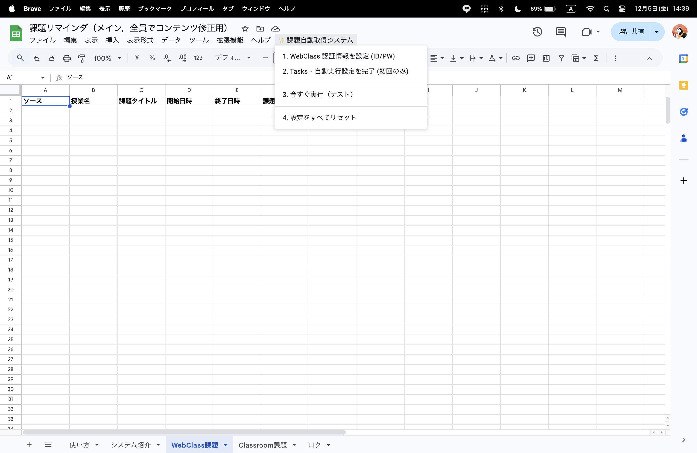
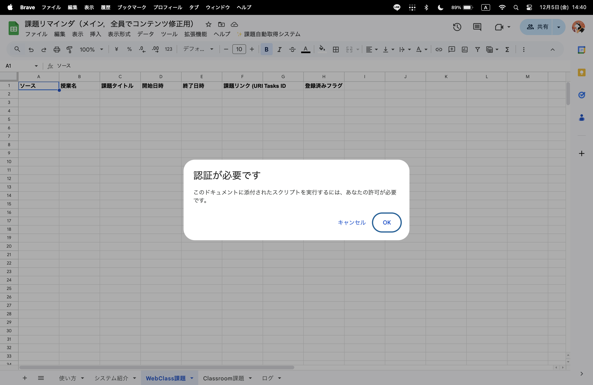
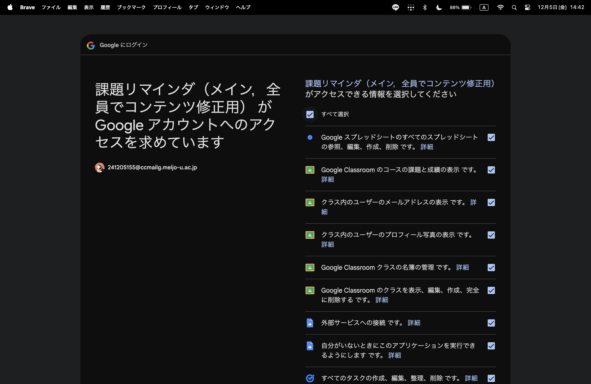

自動取得
毎日指定した時間にWebClassとClassroomの期限付き項目を取得します。
スマホと連携
Google Tasksアプリを入れれば、通知やウィジェットからお知らせ。
設定は最初だけ！
配布しているスプレッドシートのメニューから一度設定するだけ。
最初にお読みください
このシステムは、個人のGoogleアカウントと混ざると正しく動作しません。
必ず「シークレットウィンドウ（プライベートモード）」を使用してください。

シークレットウィンドウで開く
お使いのブラウザ（Chrome, Safari, Microsoft Edgeなど）の右上のメニューから「新しいシークレットウィンドウ」を選択し、大学のアカウントでログインしてからスプレッドシートを開いてください。
使い方
01
スプレッドシートをコピー
配布URLを開き、自分のGoogleドライブにコピーを保存します。

02
パスワード入力
メニューの「課題自動取得システム」を押し「１」のボタンを押します。

03
Googleアカウントの権限設定
「認証が必要です」というメッセージが表示されるので，「OK」を選択します。

04
Googleアカウントへのアクセス許可
このシステムがGoogle ClassroomやGoogle Taskにアクセスすることを許可してください。「すべて選択」を選び、「許可」をクリックします。

05
WebClass認証設定
学籍番号と，大学ポータルサイトのパスワードを入力してください。
これらの情報はお使いのGoogleアカウントに安全に保存されます。

06
自動実行をオンにする
「Tasks・自動実行設定」を選択します。

07
自動実行をオンにする
Googleタスクのリスト名と毎日の定期実行を行う時間などを変更可能です。